Data manipulation is the process of adjusting data so that it is easier to work with and more organised. Data manipulation is a crucial part of the analytical process because it allows statisticians to prepare data in a format that meets the requirements of specific analyses. The specific data manipulation needs depends on the application at hand as well as the statistical analysis that is required. Proper data manipulation enhances the interpretability of data, ensures accuracy in computations, and enables the effective application of statistical methods. Without it, raw data might obscure patterns, relationships, and insights that are vital for informed decision-making.
Data manipulation may include the following:
Removing the data that is not necessary for your analysis.
Identifying and removing rows that are duplicated.
Encoding categorical data either to or from a numerical format.
Conditional formatting in Excel.
Combining data sets.
Splitting and combining columns.
Pivot tables in Excel to reshape the data set.
A few years ago, the Super Animal Cards were available at Pick n Pay stores. These collectible cards feature illustrations and fascinating facts about various animals. The aim was to spark curiosity and environmental awareness among children. Each card highlights a different animal’s unique characteristics, habitat and conservation status.
The information from these cards are collected in a data set called super-animals.xlsx.
The VLOOKUP function in Excel is a powerful tool to make data more descriptive and meaningful by referencing values from another table. In this example, the conservation status of animals is initially indicated with numeric values (1, 2, 3, and 4) in the dataset. To make this information more interpretable, we use a lookup table containing the corresponding descriptions for each number:
| Indicator | Description |
|---|---|
| 1 | Critically Endangered (CR) |
| 2 | Vulnerable (VU) |
| 3 | Near Threatened (NT) |
| 4 | Least Concern (LC) |
By replicating the lookup table in a separate sheet of the Excel file, the VLOOKUP function can map the numeric indicators to their corresponding descriptions. This method not only improves clarity but also allows for easier data analysis and reporting, making it a practical approach to handle coded information in datasets.
The syntax for the VLOOKUP function is:
=VLOOKUP(lookup_value, table_array, col_index_num, [range_lookup])
lookup_value: The value you want to search for in the first column of the table.
table_array: The range of cells containing the table, including the column with the lookup value and the column with the return value.
col_index_num: The column number (relative to the table) from which to retrieve the result.
range_lookup (optional): Specifies whether the match should be exact (FALSE) or approximate (TRUE). By default, it’s approximate.
In this example, the process of using the VLOOKUP function to map descriptive conservation statuses to numeric indicators involves the following steps:
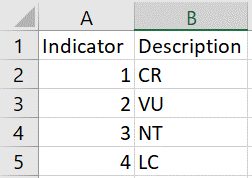
$A$1:$B$5) for the lookup table range. This prevents the table reference from shifting when you drag the formula down to apply it to other rows.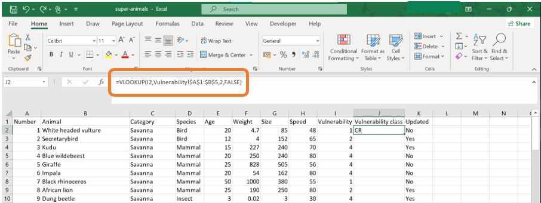
Conditional formatting is a tool in Excel that allows users to automatically apply formatting to certain cells based on specified criteria. The formatting can be colours, icons, or many others. You can create rules based on predefined options or custom formulas.
In the example of the Super Animal Cards, conditional formatting can be used to highlight the top 10 animals with the highest weights. This is particularly useful for quickly identifying the heaviest animals in the data set. To achieve this in Excel:
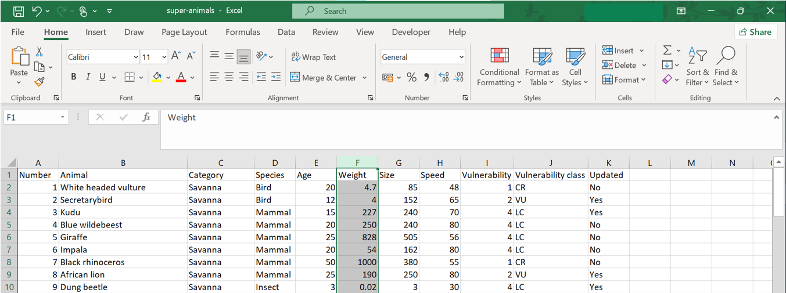
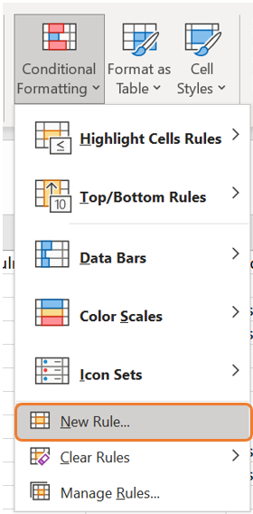
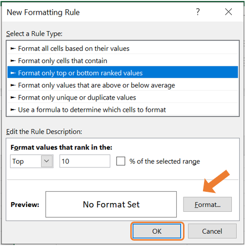
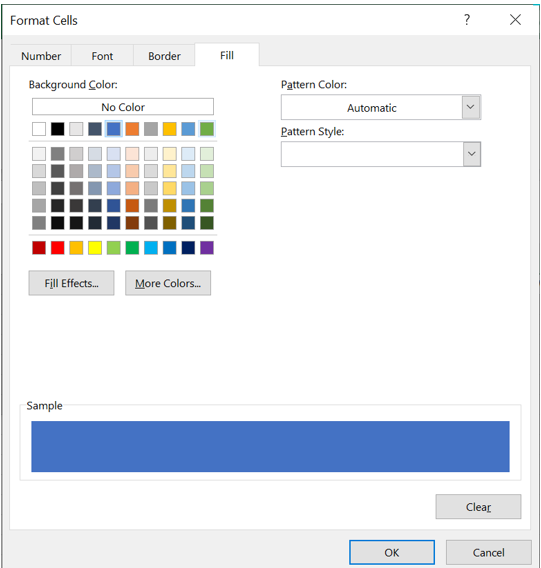
Excel can also perform basic numerical calculations, such as addition, subtraction, multiplication, and division. These operations can be executed directly in cells using simple formulas:
Addition: = A1 + B1 adds the values in cells A1 and B1.
Subtraction: = A1 - B1 subtracts the value in cell B1 from the value in cell A1.
Multiplication: = A1 * B1 multiplies the values in cells A1 and B1.
Division: = A1 / B1 divides the value in cell A1 by the value in cell B1.
These formulas can also combine multiple operations using parentheses for clarity and order of precedence. For example, = (A1 + B1) * C1 first adds the values in cells A1 and B1, then multiplies the result by the value in cell C1.
In the example of the Super Animal Cards, we can convert the speed from kilometers per hour to miles per hour by multiplying the values in column H with 0.621371.
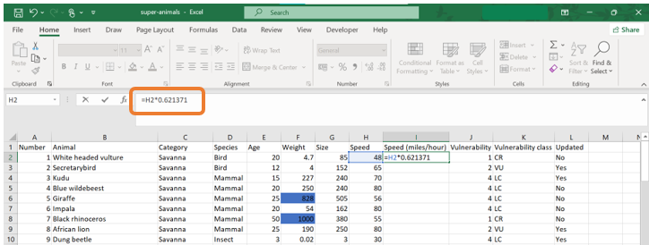
The PivotTable tool in Excel is a powerful feature for constructing crosstabulations involving two or more variables. In this example, we will consider two cases:
When both variables are categorical.
When one variable is categorical and the other is numerical.
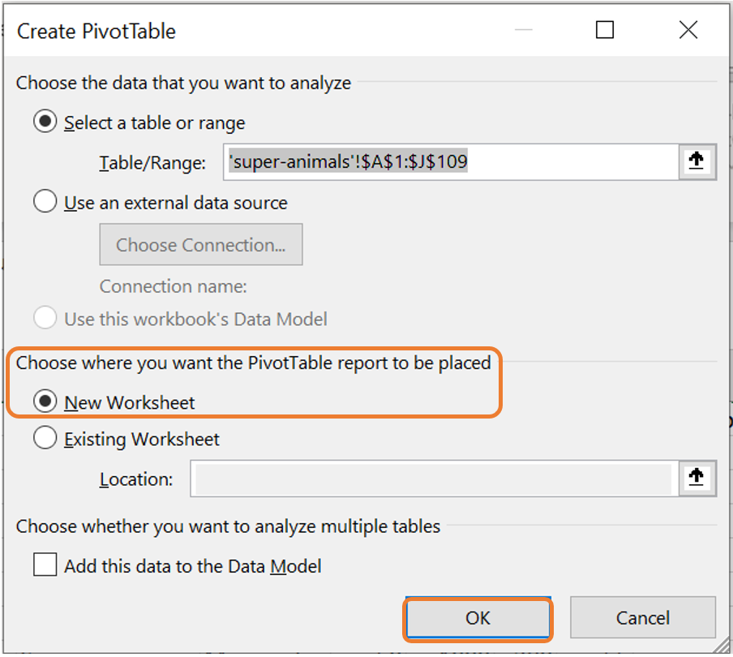
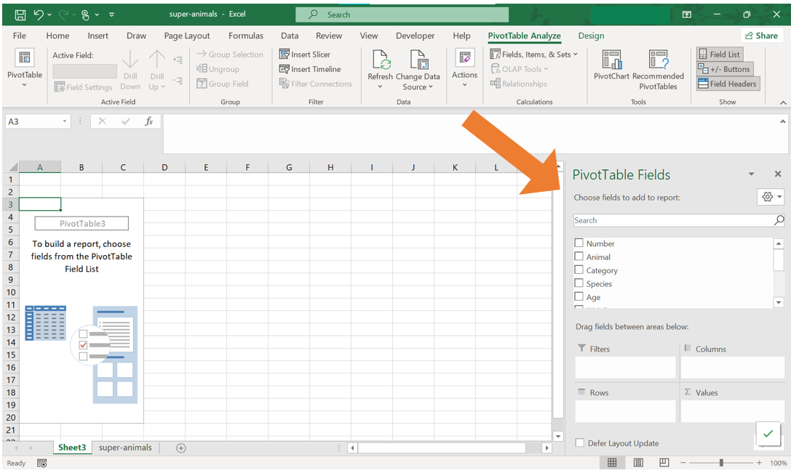
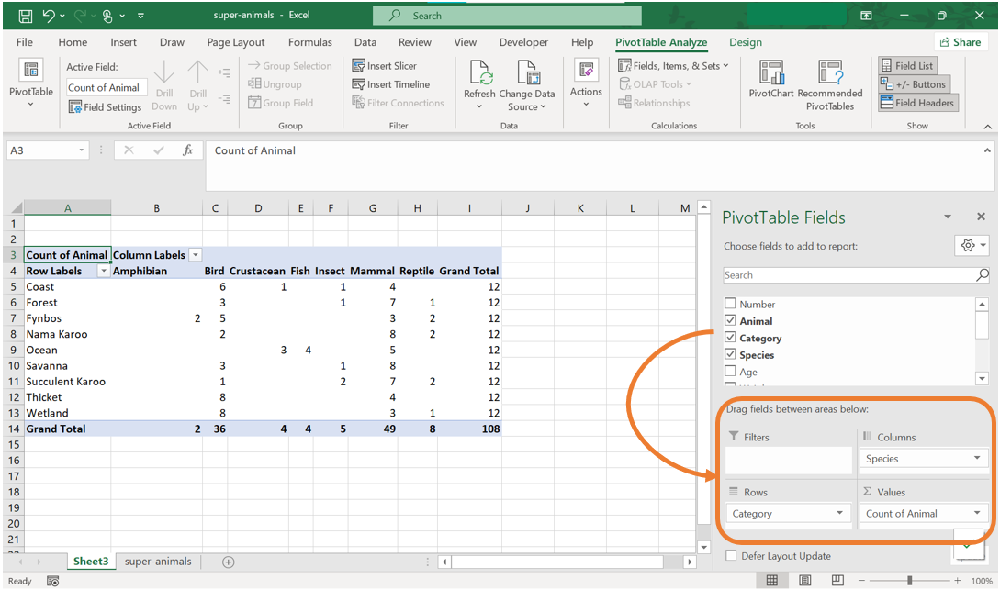
Case 2: Create a crosstabulation of the Species and the Size of the animal.
Create the Pivot Table as in steps 1 and 2 above.
Drag the column headings to their desired positions. Drag “Species” to the Rows area. Drag “Size” to the Columns area. Drag “Animal” to the Values area.
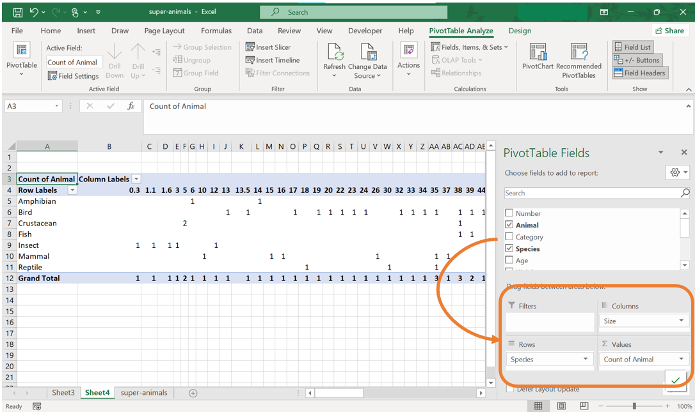
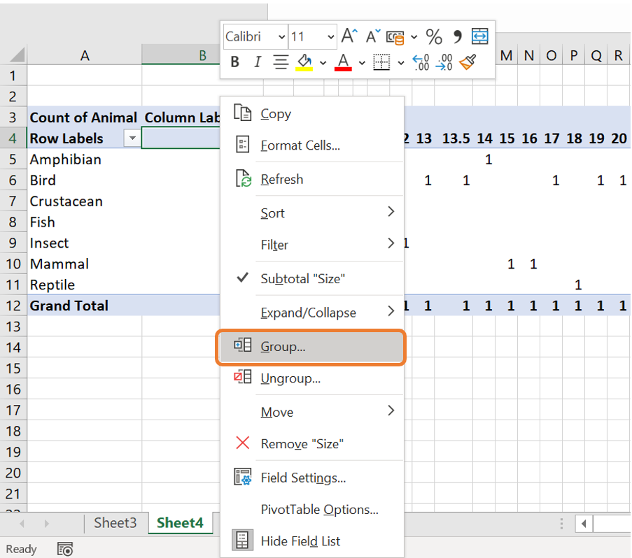
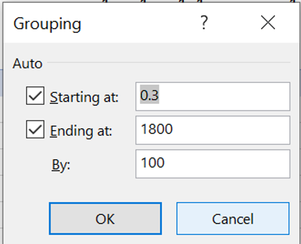
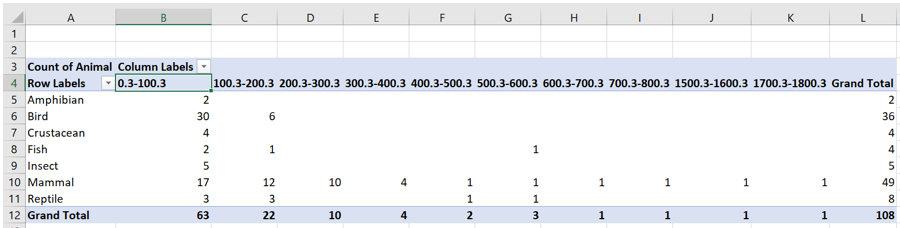
You are employed as a data analyst for a company and have been provided with a data set containing details about employees and the projects they are working on.
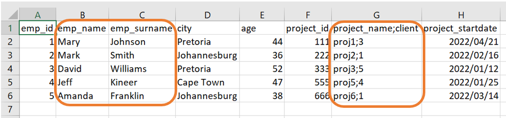
In this example, we will illustrate how to:
Combine two columns in Excel into one.
Splitting one column into two columns.
To combine the information of two columns into one, we will make use of the CONCAT function. This function is used in Excel to join, or concatenate, two or more text strings into a single string. In this example, we will join the name and the surname of the employees into a single column. The syntax for the CONCAT function is:
=CONCAT(text1, [text2], ...)
where text1, text2,... are text strings, cell references or ranges to be combined separated by commas. It is important to note that the CONCAT function does not automatically add any deliminators such as spaces or commas between the text strings. This must be explicitly added as part of the list of arguments.
For this example, if we want to combine the text in the “emp_name” and “emp_surname” variables, the following steps can be followed:
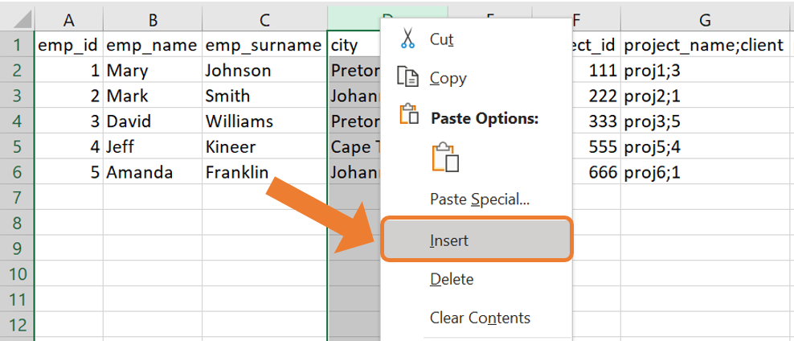
CONCAT function to combine the name of the employee (in column B) with their surname (in column C). Remember to add a space between the name and the surname!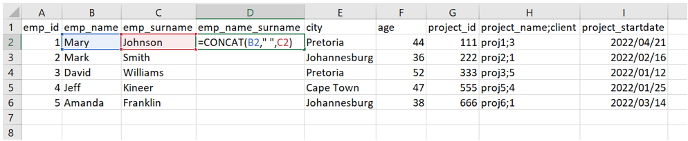
CONCAT function is as follows: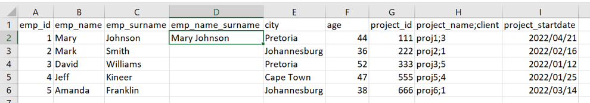
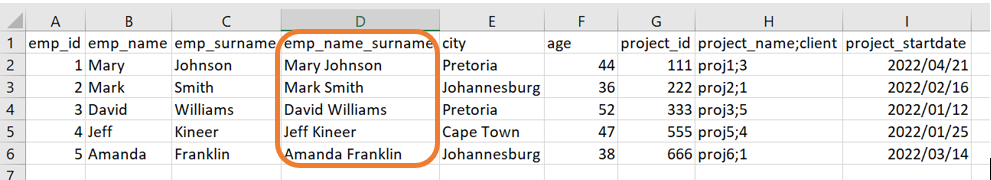
To split columns in Excel, the Text to Columns functionality can be used. This functionality is used to split data in a single column into multiple columns based on either a specific deliminator or a fixed width. This is particular useful when the combined data needs to be separated into distinct fields for easier analysis or formatting.
For this example, the project name and the client name are displayed in a single column, separated by a semicolon (;). To split them into two columns, follow these steps:
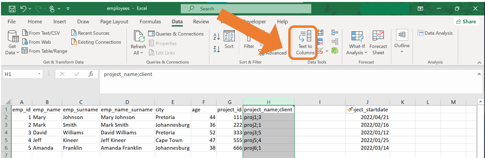
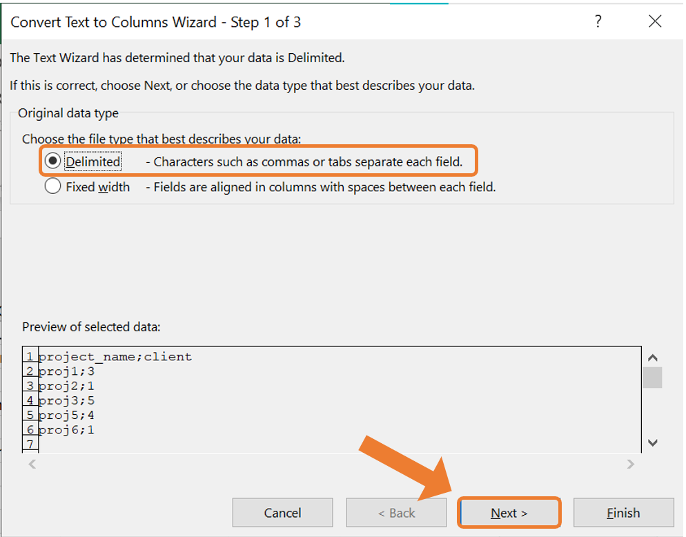
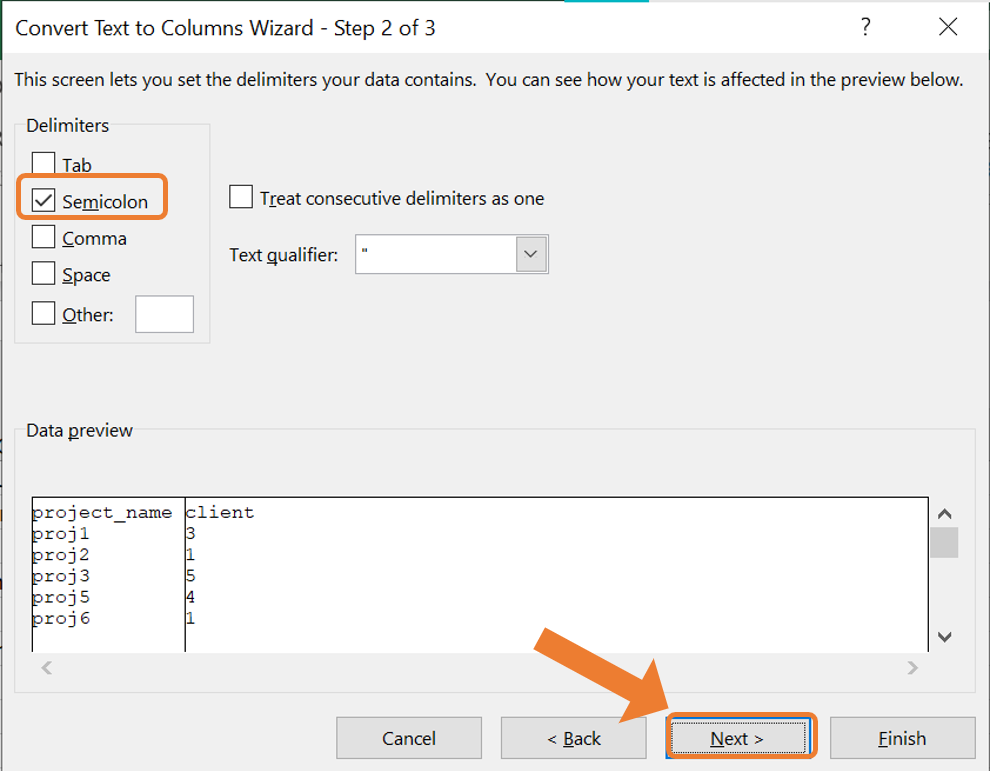
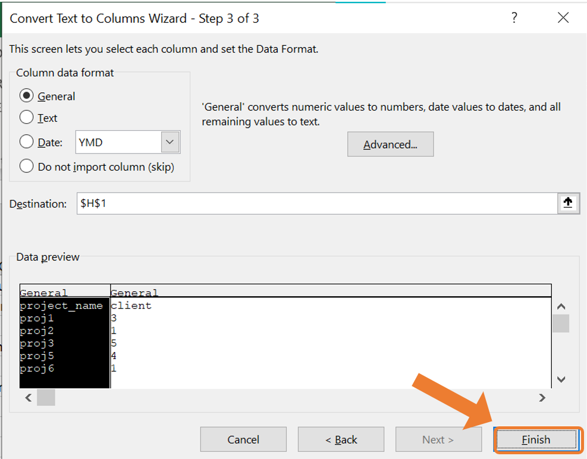
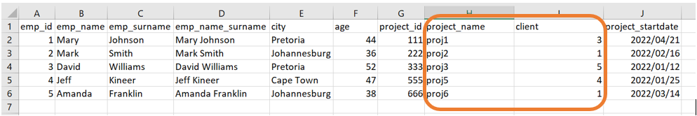
Excel has many built-in functions that can assist in doing more numerical calculations, creating new variables in a data set as well as summarising data.
The SUM function can be used to calculate the total of a range of numbers. The syntax for the SUM function is:
=SUM(number1, number2, ...) or =SUM(range)
For example, SUM(A1:A10) will return the sum of all the numbers in cells A1 to A10.
The arithmetic mean of a range of values can be calculated with the AVERAGE function. The syntax for the AVERAGE function is:
=AVERAGE(number1, number2, ...) or =AVERAGE(range)
For example, AVERAGE(A1:A10) will return the average of all the numbers in cells A1 to A10.
Counting functions can be useful for analysis the structure of the data set. Here we will consider three counting functions popularly used in Excel:
COUNT function counts the number of cells containing a numerical value. The syntax for the COUNT function is:=COUNT(value1, value2, ...) or =COUNT(range)
For example, COUNT(A1:A10) will return the number of cells containing a numerical value in cells A1 to A10.
COUNTA function counts the number of non-empty cells. The cells can contain numerical values, text or values from any other data type. The syntax for the COUNTA function is:=COUNTA(value1, value2, ...) or =COUNTA(range)
For example, COUNTA(A1:A10) will return the number of non-empty cells in the range A1 to A10.
COUNTBLANK function counts the number of empty cells. The syntax for the COUNTBLANK function is:=COUNTBLANK(value1, value2, ...) or =COUNTBLANK(range)
For example, COUNTBLANK(A1:A10) will return the number of empty cells in the range A1 to A10.
The MIN and MAX functions can be used to identify the smallest and the largest value in a range. The syntax for the MIN and the MAX functions is:
=MIN(number1, number2, ...) or =MIN(range)
=MAX(number1, number2, ...) or =MAX(range)
For example, MIN(A1:A10) will return the smallest value in the range A1 to A10 and MAX(A1:A10) will return the largest value in the range A1 to A10.
The IF function performs a logical test and returns one value if the condition is true and another value if the condition is false. The syntax for the IF function is:
=IF(logical_test, value_if_true, value_if_false)
logical_test: Any value or expression that can be evaluated to TRUE or FALSE.
value_if_true: The value that is returned if logical_test is TRUE.
value_if_false: The value that is returned if logical_test is FALSE.
For example, =IF(A1>50, "Pass", "Fail") will return “Pass” if the value in cell A1 is greater than 50; otherwise it will return “Fail”.
The number of cells than meet a certain condition can be counted with the COUNTIF function. The syntax for the COUNTIF function is:
COUNTIF(range, criteria)
range: The range of cells from which you want to count non-empty cells.
criteria: The condition in the form of a number, expression or text that defines which cells will be counted.
For example, =COUNTIF(A1:A10, ">10") will count all the cells from A1 to A10 which contains a numerical value greater than 10.
The SUMIF function is used to sum the values in a range that meets a specified criteria. The syntax for the SUMIF function is:
=SUMIF(range, criteria, [sum_range])
range: The range of cells you want to evaluate.
criteria: The condition or criteria in the form of a number, expression or text that defines which cells will be added.
sum_range (optional): The actual cells to sum. If this argument is not specified, the cells in range will be used.
For example, suppose you have a data set with two columns, where column A contains the product category and column B contains the number of sales.
=SUMIF(A1:A10, "Electronics", B1:B10)
where Excel will look for the word “Electronics” in the range A1 to A10 and the corresponding sales values in B1 to B10 will be summed.
=SUMIF(B1:B10, ">500")
where Excel will sum all the sales values greater than 500 in the range B1 to B10.
In Excel, you can use absolute cell referencing to ensure that the formula keeps referencing to the same cell or range of cells regardless or where the formula is copied or moved. The syntax for absolute cell referencing is: $Column$Row. For example, $A$1 refers to cell A1 and this reference will not change regardless of where the formula is copied in the Excel sheet.
Absolute cell referencing is useful in scenarios where you need to repeatedly reference the same cell or range of cells. Common examples include:
Using a constant value: When applying a discount stored in a specific cell across multiple calculations.
Referencing a total: Referring to a grand total cell in calculations.
Describe a scenario where you might use the Text to Columns functionality in Excel.
Explain the difference between using a delimiter and using fixed width in the Text to Columns tool. Provide examples for each.
What is the difference between COUNT, COUNTA, and COUNTBLANK functions? Provide an example for each.
You are analysing sales data, and the column containing the product names has been combined with the client names, separated by a comma. Describe how you would use Excel to split this column into two separate columns.
Explain how the CONCAT function can be used to combine data from two columns. Provide an example of when this might be useful.
Explain the importance of absolute cell referencing in Excel. Provide an example of when it would be necessary.
Describe a situation where combining data from two separate columns would be helpful for analysis. Which function in Excel would you use, and why?